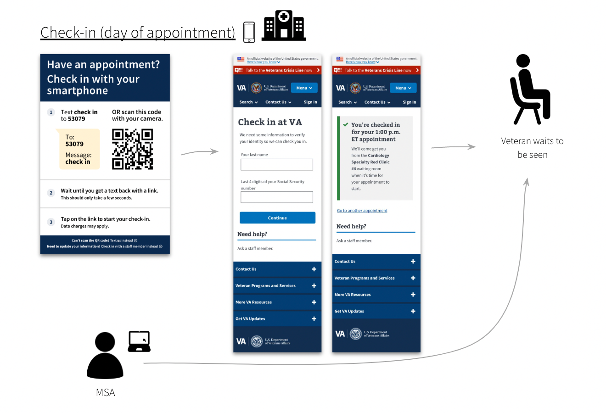
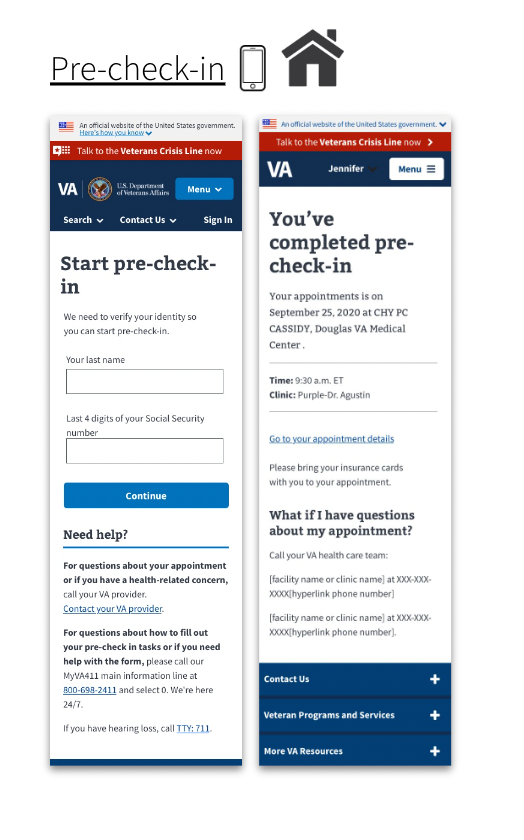
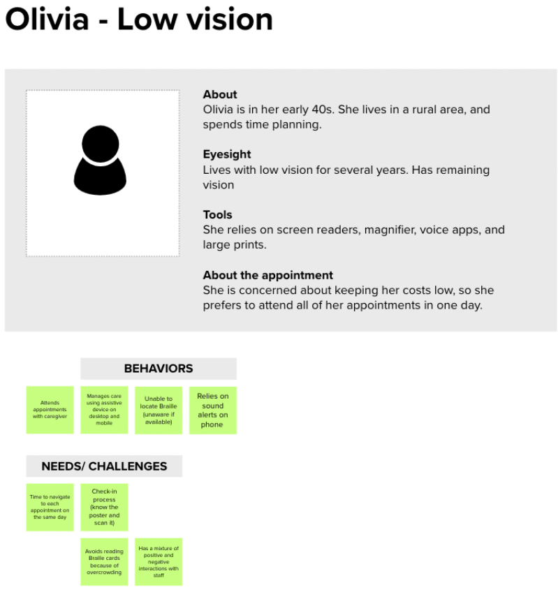
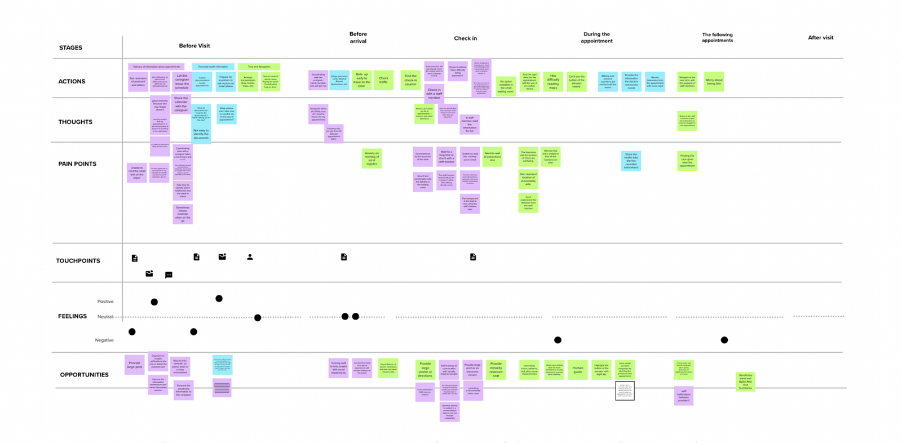

A note on language: We’re using both people-first language (“a person with a disability”) and identity-first language (“disabled person”). We recognize both are valid and advocated for within the disability community.
“We lost our vision due to our service…my vision gets blurry,” says a Veteran over Zoom during a user research session.
We were testing new designs for a web-based app helping Veterans check into a medical appointment.
This Veteran’s experience is not uncommon: about 30% of Veterans live with a disability (but that number is likely much higher due to military culture). Almost 7,000 Veterans become newly blind or visually impaired every year. And disabilities can vary in type and severity — the most common of which include hearing loss, post-traumatic stress disorder (PTSD), scars, back and neck pain, and migraines.


Checking into a medical appointment with a smartphone has barriers
For example, it requires a Veteran to:
- Own a phone (or have access to one)
- See the check-in poster at the facility
- Have reasonable tech-savviness to use SMS or a QR code
- Understand the steps within a reasonably short time-frame (which can be difficult for some Veterans with cognitive disability or PTSD)
We wanted to design digital and non-digital solutions that helped make it more usable for disabled Veterans to check into medical appointments.
But we had a lot of questions.
- Are we able to design for the range of types and severity of disabilities?
- Would some solutions only benefit some Veterans, while introducing barriers to others?
- How do we decide on those trade-offs?
We created an Accessibility Use Case Map
An accessibility use case map is a framework to evaluate proposed solutions across multiple different types of disabilities affecting Veterans. We considered both digital and non-digital solutions for each phase of the check-in process.
A spreadsheet makes it accessible
As we note later in the article, we worked with an accessibility specialist who uses a screen-reader. We chose to design the map in a spreadsheet. This made it easy for our colleague to offer feedback.

We wanted our map to help prioritize solutions that maximized benefits for Veterans living with a variety of disabilities, while minimizing the chances of introducing barriers.
Here’s how we created the accessibility use case map.
Step 1: Developed proto-personas for each type of disability
We chose nine of the most common types of disabilities reported by Veterans:
- Blindness
- Low vision
- Hard of hearing/deafness
- Cognitive disability
- PTSD
- Motor disabilities
- Military Sexual Trauma (MST)
- Deafblindness
Time and resources were limited. So we used secondary sources and “best estimates” to develop light-weight personas of each disability type ( proto-personas). Each described the behavior, symptoms, needs, and tools used to manage the condition. This allows for quicker, iterative research.

Step 2: Created user journey maps to identify pain points and possible solutions
Based on the proto-personas, we created user journey maps across the medical appointment experience:
- Before checking into an appointment
- During the appointment, and;
- After the appointment
We proposed solutions to help address pain points across the journey for each type of disability.

Step 3: Mapped each solution across multiple disability types, creating our accessibility use case map
But what might benefit someone with one type of disability, might be a barrier for others. For instance, text-to-speech software is helpful for a blind Veteran trying to access their appointments. But it may be inaccessible to a Veteran who is hard of hearing.
Due to this challenge, we decided to map each proposed solution across the 9 most common disabilities affecting Veterans.
We listed recommendations along the x-axis. We then listed the nine disabilities along the y-axis.
For each type of disability, we assessed if the solution was:
- Impactful (positive and we believe will enhance the experience for this disability)
- Helpful (positive and it’s not specific to this disability)
- It Depends (it may depend on the degree or type of disability, or the recommendation is too complex for us to weigh in at this point)
- Not Relevant
- Inaccessible (it’s a barrier for a person with this disability)
Step 4: Iterated with various accessibility experts
Time constraints didn’t allow us to validate with users (which would’ve been ideal). Instead, we iterated on our map with various accessibility specialists:
- Josh Kim (Accessibility Designer)
- Martha Wilkes ( Accessibility Strategist at the VA Office of the Chief Technology Office)
- Melissa Manak (Senior User Experience Mobile Designer)
- Angela Fowler (Senior A11Y Specialist and Designer)
- Vanessa Luxen (an IAAP certified professional and former Audiologist at CivicActions)
Some of the experts we consulted also lived with a disability. This helped ensure we were including the lived experiences of the very people we were designing for.
Step 5: Developed an “Accessibility Impact Score” for each recommendation.
Working with our accessibility experts, we assigned a value depending on how helpful or unhelpful the solution was for each type of disability. We called this our “Accessibility Impact Score.”
- 3 for Impactful (positive and we believe will enhance the experience for this disability)
- 2 for Helpful (positive and it is not specific to this disability)
- 1 for It Depends (it may depend on the degree of type of disability, or the recommendation is too complex for us to weigh in at this point)
- 0 for Not Relevant
- -2 for Inaccessible (it is a barrier for a person with this disability)
We then tallied the number of scores for each solution to calculate the final “Accessibility Impact Score.”
This helped us assign a numerical value to evaluate the impact each recommendation would have across multiple disabilities. For instance, improvements like “sending an SMS notification with a link to pre-check-in” was one of our highest impact solutions. This meant it was impactful for the greatest number of disabilities.
Step 6: Prioritized recommendations based on the Accessibility Impact Score
Using a prioritization matrix, we prioritized each recommendation based on its total Accessibility Impact Score.
We refined it further with our product team based on scope and feasibility, so we could eventually choose the recommendations we wanted on our roadmap.
We took some risks and made many assumptions
There are many caveats with our framework, for instance:
- It favors specific solutions that are impactful for a few disabilities and may end up with a lower score vs. general solutions that help a variety of disabilities.
- We did not capture the complexity within each disability type. For example, cognitive disabilities can include a range of disabilities that vary in severity, symptoms and more. We recognize disabilities are not a monolith and the experiences are complex and varied.
- It doesn’t take user preferences or familiarity with the technology into account
- It’s not intersectional — it doesn’t consider people who live with more than one disability
- We didn’t test it with users living with disabilities.
Ideally, disabled Veterans would be part of our process
This is our first attempt at designing for disabled Veterans when resources are limited, time-frames are tight, and priorities conflict.
What would we have done differently without those constraints? We would have included disabled Veterans throughout all six steps of the process. This way we’d design with (not for) the disabled Veteran community.
What’s next?
This framework is dynamic. We plan to continue to iterate as we address our many assumptions. We hope to start conducting user research sessions with Veterans living with disabilities to validate (and invalidate) our proposed improvements.
Authors: Nira Datta, Senior Content Designer at CivicActions; Ya-ching Tsao, Product Designer at CivicActions